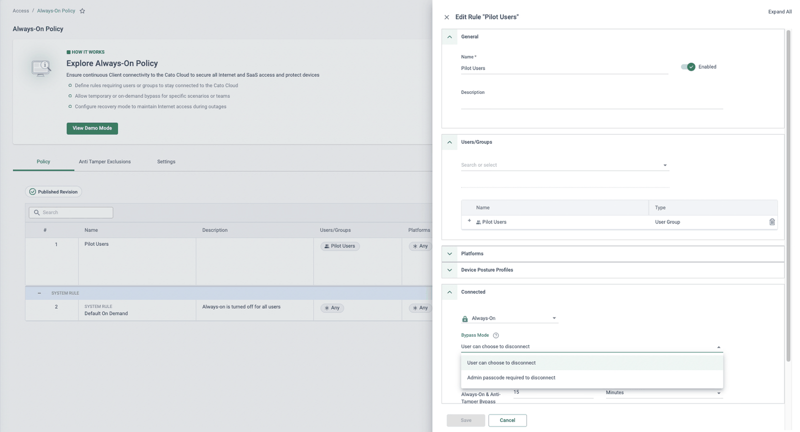
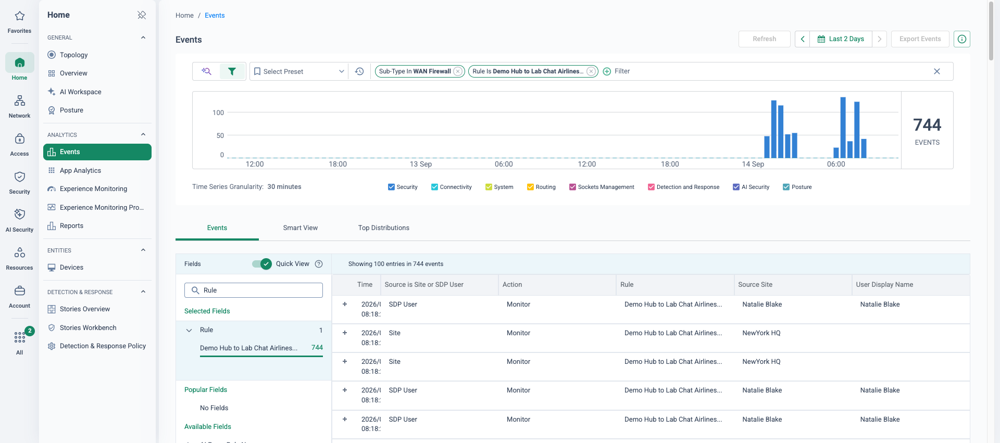

Why this matters
Hybrid work is no longer an emergency arrangement — it is how the business runs. Sales engineers on customer sites, developers at home, executives in departure lounges: the network they get should not depend on which chair they happen to be sitting in.
The objective: every user gets the same identity, the same policy, the same protection and the same performance — in the office, at home, or on the road — without IT running a parallel remote-access estate to deliver it.
Where VPN concentrators fall down
Legacy remote access was designed for the exception — the occasional traveller — not for a workforce that is remote half the week. Two structural problems follow:
Backhaul & capacity
- All remote traffic hairpins through a concentrator at HQ — even traffic destined for M365 or SaaS
- Appliances sized for a fraction of the workforce collapse when everyone connects at once
- Users far from HQ pay the round-trip latency on every packet
- Performance pain trains users to disconnect the VPN — and lose protection entirely
Split-brain security
- The full inspection stack lives at HQ — remote users get whatever the concentrator bolts on
- Two policy sets to maintain: office firewall rules and VPN ACLs, drifting apart over time
- Split tunnels send internet traffic straight out of the home router, uninspected
- Little or no visibility of what remote users experience — until the ticket arrives
“Does a user working from home today get exactly the same security policy and inspection as a user at a desk in the office — and if not, which of the two is the real policy?”
Where this sits in the Cato SASE platform
- From home or a hotel the always-on Cato Client reaches the nearest PoP; sign-in is MFA/SSO via the IdP.
- At the office desk the Client detects the Cato Socket and switches to office mode; the same rule base applies.
- Every path gets the full single-pass stack at the PoP; Microsoft 365 and SaaS egress locally.
- Private apps behind the London DC Socket are reached over the backbone, with no VPN concentrator.
One front door, wherever the user is
The Cato Client (Windows, macOS, iOS, Android, Linux) connects each user to the nearest of 100+ PoPs, where the full single-pass security stack — ZTNA, FWaaS, SWG, IPS, anti-malware, TLS inspection — is applied to every flow. Policy is identity-driven via the IdP (MFA/SSO on sign-in), so the same rules follow the user to any location. The client is always-on: there is nothing to toggle, so there is no unprotected state to fall back into.
When that same user badges into the office, nothing changes. The client detects it is behind a Cato Socket and switches to office mode — traffic rides the site socket instead of a client tunnel, and hits exactly the same policy. There is no office/remote split-brain because there is only one rule base.
What the business gets
Consistent experience anywhere
Office, home, customer site or hotel — same sign-in, same access, same protection. Users stop noticing where they are working from.
No backhaul latency
Traffic enters the nearest PoP and rides the private backbone — not a concentrator on the other side of the world. SaaS egresses locally.
Continuous ZTNA verification
Identity, device and session are verified throughout the connection — not just at login — with MFA/SSO through your existing IdP.
One policy for office + remote
No VPN/office split-brain. A rule written once applies to the user at their desk and on the road — office users simply ride the site socket.

How to run the demo
Ask how many VPN concentrators they run, where they sit, and what Monday 09:00 looks like. Whose traffic is split-tunnelled today, and who signed that off? Anchor the demo to their answer.
-
Connect the Cato Client from home
On a laptop “at home”, launch the Cato Client — same client family across Windows, macOS, iOS, Android and Linux. Sign-in is MFA/SSO through the IdP. Show the client status: connected to the London PoP, the nearest to Reading — not a corporate concentrator. Point out there is nothing for the user to toggle: connectivity is always-on.
-
Open an internal app behind the London DC socket
From the home connection, browse to an internal application hosted behind the London DC socket. Traffic enters the nearest PoP, is fully inspected there, and rides the backbone to the datacentre — no inbound holes in the DC firewall, no published VPN gateway to attack.
-
Show the identical WAN Firewall policy hit
Security → WAN Firewall
Open the rule that just allowed the access, then filter Monitor → Events to the user: the same rule fires whether Priya connects from the office or her sofa. One rule base — there are no VPN ACLs to drift out of sync.
-
Prove inspection follows the user
Security → Internet Firewall
From the same remote session, browse to a blocked category (e.g. gambling) and show the block page. Internet traffic from home gets the full security stack at the PoP — nothing is split-tunnelled out of the home router uninspected.
-
Show office mode — same user, at a desk
Now the same user in the office: the client detects it is behind a site socket and switches to office mode, riding the socket instead of a client tunnel. Re-run the app access and show the identical policy hit — the office/remote distinction has disappeared from the policy.
-
Zoom out to the whole remote workforce
Home → Experience Monitoring
Switch to the Remote Users tab: every remote worker scored at a glance — device, connected PoP, apps in use and average TTFB — beside the account-wide experience graph and a feed of SLA stories. This is the Monday-morning answer to “is it just me, or is it everyone?”

Experience Monitoring, Remote Users tab (demo tenant, fictional identities): the whole remote workforce scored on one screen — the fleet view your VPN concentrator never had. -
Close on the user view
Monitor → Users
Open the user's page: connection history (which PoP, from where, on what device), live status, and the experience view of what the user is actually getting. “This is the visibility your VPN never gave you.”
How to prove it in the customer's tenant
The demo shows one policy following one user around; the PoV proves it with a pilot cohort of real users — typically 20–30 people who genuinely split their week between the office and home — living on the Cato Client for a fortnight. Agree the success criteria below before configuring anything, per the frame in Running a Cato PoV: each row is a measurable statement with a named evidence artefact, reviewed at the weekly sync.
| Success criterion | What we prove | Evidence artefact | Where it lives |
|---|---|---|---|
| One policy, both chairs | The same WAN Firewall rule allows Priya's app access from her office desk and from home — no parallel VPN ACL anywhere | Two dated event records, identical rule name, different connection origin | Monitor → Events · Security → WAN Firewall |
| Always-on enforced | A cohort user cannot casually disconnect the client; any bypass is admin-governed and time-boxed | Screenshot of the client refusing disconnect; record of the one-time passcode issued for the sanctioned test | Cato Client · Access → Always-On Policy |
| Posture gates access | A device missing the agreed endpoint agent is blocked at connect, with the failed check named to the user and logged | Client error with Details naming the failed check; Client Connectivity block event | Monitor → Events |
| Remote experience quantified | Every cohort member has an Experience Monitoring baseline: score, connected PoP, apps and average TTFB across the pilot | Remote Users tab view plus per-user drill-downs, captured weekly | Home → Experience Monitoring |
| The cohort lives on it | Two full working weeks through the client with no showstopper tickets from the pilot group | Helpdesk ticket count for the cohort beside the EM trend | Customer helpdesk · Home → Experience Monitoring |
- Licences — ZTNA/SDP user licences covering the cohort size for the PoV period.
- Identity first — IdP connected and the pilot group provisioning via SCIM before any policy is written; the design choices are covered in Identity Integration Design.
- Client deployment path — MDM push or a documented manual install for cohort devices. Check minimum client versions against the features in scope (the version-gated items are flagged in the steps below).
- One socket site in scope — the office-mode leg of the "one policy" proof needs a real office behind a Cato Socket, not just remote users.
- TLS inspection only if claimed — the core proofs here need no content inspection; if the customer adds content-level criteria, stage TLSi first per TLS Inspection: Staged Rollout Playbook.
Configuration walkthrough
-
Pin the cohort in identity
Access → Directory Services
Scope SCIM provisioning to a dedicated pilot group (e.g. ZTNA-Pilot) in the IdP and confirm its members appear under Access → Users. Every policy in this PoV references the synced group, so joiners and leavers maintain themselves — which is itself a talking point at the wrap-up (SCIM User Provisioning).
-
Author the posture checks and profile
Access → Device Posture
Create two device checks: an anti-malware check — start with "any supported anti-malware", tightening later to the customer's named vendor/product with a minimum version — and a disk encryption check on the system drive. Bundle both into a profile (e.g. Pilot-Managed-Device); checks inside a profile combine with AND, so the device must satisfy every one (Creating Device Posture Profiles and Device Checks).

A production-shaped posture profile (lab tenant): anti-malware and disk-encryption checks — the two this step creates — sitting alongside firewall, patch-management, certificate and client-version checks. Every check combines with AND, so the pilot device must satisfy the lot to count as managed. -
Gate the connection — monitor-first
Access → Client Connectivity Policy
Week-one rule: source ZTNA-Pilot, platforms in scope, Device Posture Profile Any, action Allow WAN and Internet. The policy is first-match and ends in an implicit any-any block, so order matters. Nothing is enforced against posture yet — a clean week of connection events for the cohort is the baseline that makes the block test in step 4 meaningful (Configuring the Client Connectivity Policy).

The step-4 end state, one panel (lab tenant, fictional identities): the pilot rule with a Device Posture Profile attached and action Allow WAN and Internet — once this replaces the posture-Any week-one rule, a failed check means no tunnel at all. -
Turn the posture key
Access → Client Connectivity Policy Monitor → Events
After the clean week, edit the rule to require Pilot-Managed-Device. Continuous posture checks (the Check Policy tab under Resources → Device Posture, Windows and macOS Clients) re-run the device checks on an interval — 10 minutes is the recommended frequency — so a device that falls out of compliance mid-session is caught, not just at sign-in. Prove the gate with a sacrificial device: Marcus's spare laptop, which lacks the named endpoint agent, fails at connect — the client shows an error whose Details names the failed check, and a matching block event lands in Events (Continuous Posture Checks).
-
Enforce always-on
Access → Always-On Policy
Add a rule for ZTNA-Pilot so the cohort is always connected to the Cato Cloud — the client cannot be casually switched off. Governed bypass exists and is the point to demonstrate, not hide: an admin-issued one-time passcode valid for up to 15 minutes, and (on Windows and macOS Clients, and iOS 5.6+) a user-initiated bypass that requires a recorded reason — on Windows 5.9+ for as long as the rule's Disconnect Duration allows. Have a cohort member try to disconnect without one — that screenshot is the success-criterion artefact (Protecting Users with Always-On Security).

The always-on construct exactly as the step describes (lab tenant, fictional identities): one rule scoping the pilot group to Always-On, sitting above the default on-demand system rule, with Bypass Mode set in the same panel — governed bypass configured in the open, not hidden. -
Decide egress — and keep the default
Access → Split Tunnel Policy
By default all Client traffic rides the tunnel to the Cato Cloud for full inspection — keep it that way for the PoV, because every proof above depends on traffic actually traversing the policy. If the customer insists on an exclusion (real-time UC media is the usual ask), record it in the test-case register as a scoped exception: excluded traffic bypasses inspection and visibility by design (Split Tunnel Policy).

What a scoped exception looks like (demo tenant): one named rule with a description that says exactly what it carves out — here Azure fabric services for a cloud VM — and nothing else in the rulebase. An exclusion the customer asks for should read like this in the test-case register. -
Run the two-chair test, then baseline the cohort
Monitor → Events Home → Experience Monitoring
Priya opens the same internal app from home on Tuesday and from her office desk on Wednesday — behind the socket the client is in office mode, yet Monitor → Events filtered to her shows the same WAN Firewall rule firing with a different connection origin. Screenshot both events side by side. Then open the Remote Users tab of Experience Monitoring for the cohort baseline — score, connected PoP, flows and average TTFB per user — and drill into one user for the per-application view (Using the Experience Monitoring Page, the user drill-down page).

Monitor → Events (demo tenant, fictional identities) — one WAN Firewall rule (Demo Hub to Lab Chat Airlines), 744 hits in two days, with SDP User rows for a named remote user interleaved with Site rows from the office origin seconds apart. Point at the Rule column: identical on every row, so there is no remote variant to drift. One honest caveat — the office rows attribute to the site rather than the user's name, so for the strict two-chair proof also filter on the user and pair their office-mode event with this view.
What good output looks like


Troubleshooting the pilot
SCIM sync lag
A new cohort member cannot connect or misses every rule. Check membership under Access → Users and the IdP's provisioning log — IdP push cycles are not instant (Entra ID provisions on its own schedule, and re-enables a user only at the next cycle). Trigger on-demand provisioning from the IdP rather than re-editing Cato policy.
Posture false-negatives on AV naming
A compliant device fails the anti-malware check because the installed product string does not match the vendor/product selected in the check. Read the failed check named in the client's Details, then loosen to "any supported anti-malware" to confirm, and re-tighten with the correct vendor/product and a minimum-version operator.
Office mode doesn't engage
At the office the client still tunnels like a remote user. Confirm the laptop's VLAN actually egresses via the site socket (guest Wi-Fi straight to the internet never counts), and check client versions — office-based posture checks need Windows 5.7+, macOS 5.8+ or Linux 5.3+.
MFA loops at sign-in
A cohort user is prompted repeatedly at client sign-in. Usual suspects: an aggressive IdP conditional-access or session-lifetime policy on the Cato SSO app, or clock skew on the device. Align the session lifetime with the working day and fix the clock before touching Cato config.
Pilot user hits the implicit block
The client connects to sign-in but access is refused and Events shows no rule matched. The Client Connectivity Policy is first-match and ends in an implicit any-any block — check the user is in the synced pilot group and the pilot rule sits above any narrower rule that steals the match.
Disk-encryption check fails on encrypted disks
A device with hardware-based drive encryption reads as non-compliant: the check validates software-based encryption only, per drive path. Either standardise the cohort on software encryption or scope the profile so the criterion is provable on the devices you actually have.
Gotchas & exit
- Always-On covers Windows, macOS, Android and iOS — not Linux. A developer cohort on Linux still connects, but the "cannot casually disable" criterion cannot be evidenced on those devices; scope the criterion to the platforms it applies to.
- Bypass passcodes are time-boxed — each one-time code is valid for up to 15 minutes (longer disconnect durations are configurable on Windows Client 5.9+). Plan maintenance windows accordingly rather than promising indefinite overrides.
- Experience Monitoring has edges — application metrics are calculated for outbound TCP traffic, and data can take up to 30 minutes to appear; the anomaly-story feed depends on licensing. Do not promise a baseline from minute one.
- Block on a sacrificial device, not a person's daily driver. The posture block is the most memorable evidence in the PoV — and the worst possible surprise for a real user mid-meeting. Marcus's spare laptop exists for a reason.
Unwinding cleanly: relax the Client Connectivity rule's posture requirement back to Any before removing anything; disable the Always-On rule; remove profile references from policies before deleting the checks themselves; and de-scope the pilot group from SCIM only if it was created purely for the PoV. If the decision is a yes, do none of it — the pilot policy set is the production starting point, which is rather the point.